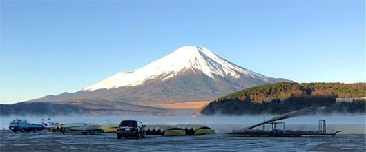

I am a cheerful and lively girl, generous and optimistic, down-to-earth sincere, positive and enterprising, with a strong organizational ability to plan, practical ability, team spirit of cooperation, with the spirit of hard work, courage to dedicate the good character.
I have always believed that hard work, down-to-earth is the basis for doing everything is essential to success, and enthusiasm, sincerity is indispensable to treat people, but also to achieve a good interpersonal relationship is a necessary condition. I believe that nothing in the world is difficult to be afraid of people with heart, positive, optimistic, self-confident and careful personality let me work in the Student Union outstanding, but also believe that these qualities can bring me some advantages in the future work, so that I can complete each work with a more down-to-earth attitude.